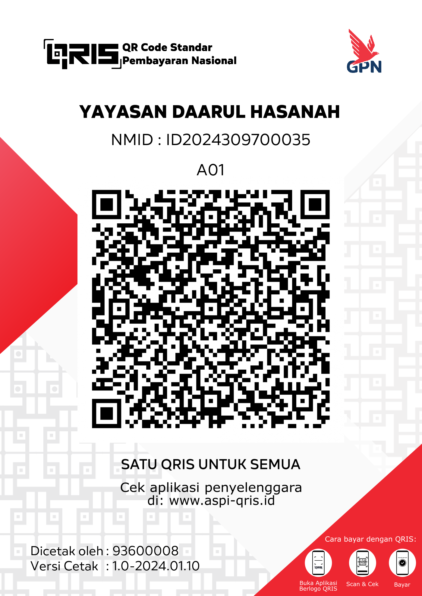

FAQ & Info Pengiriman
Biar kamu nggak perlu bolak-balik chat, semua info penting ada di sini.
Bagaimana cara pengiriman & estimasi sampai?
Pengiriman dilakukan setiap hari Senin–Sabtu (kecuali hari libur nasional).
- Jabodetabek: 1–3 hari kerja
- Pulau Jawa: 2–5 hari kerja
- Luar Jawa: 3–7 hari kerja
Nomor resi akan dikirimkan via WhatsApp setelah paket diproses.
Berapa ongkos kirimnya?
Ongkir dihitung otomatis berdasarkan kota tujuan saat checkout. Estimasi:
- Jabodetabek: mulai dari Rp8.000
- Pulau Jawa: mulai dari Rp12.000
- Luar Jawa: mulai dari Rp18.000
Gratis ongkir untuk pembelian tertentu (cek promo di homepage).
Bagaimana cara pembayaran?
Setelah order dikonfirmasi via WhatsApp, kamu bisa bayar dengan:
- Transfer bank (nomor rekening akan dikirim di chat)
- QRIS

Kirim bukti transfer ke WhatsApp ya. Pesanan akan diproses setelah pembayaran terkonfirmasi.
Bagaimana cara merawat perhiasan?
- Hindari kontak langsung dengan parfum, lotion, atau air laut.
- Simpan di tempat kering dan tidak lembab (bisa pakai pouch kain).
- Lepas perhiasan sebelum mandi atau berolahraga.
- Bersihkan dengan kain lembut kering secara berkala.
Dengan perawatan yang baik, aksesoris Yoii bisa awet lebih lama.
Bisa retur atau tukar barang?
Kami menerima retur/tukar dalam kondisi berikut:
- Barang cacat produksi
- Barang tidak sesuai dengan pesanan
- Maksimal 3 hari setelah barang diterima
Syarat: barang masih dalam kondisi baik, belum dipakai, dan ada bukti unboxing (video/foto). Hubungi kami via WhatsApp untuk proses retur.
Apakah bisa custom ukuran atau warna?
Ya! Kamu bisa ajukan custom melalui form di homepage (bagian “Make It Yours”) atau langsung chat WhatsApp. Ceritakan warna, nama, atau detail yang kamu inginkan.
Berapa lama proses custom?
Proses custom biasanya memakan waktu 3–7 hari kerja setelah konfirmasi desain dan pembayaran, tergantung tingkat kesulitan.